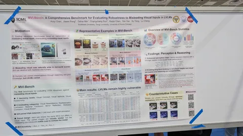

SWE-rebench V2: Language-Agnostic SWE Task Collection at Scale
Ребята из Nebius расширили свой SWE-rebench на новые языки: сфокусировались на масштабируемости и пригодности для сбора RL-лёрна. Две ключевые части пайплайна: сборка окружения под каждый репозиторий и отбор задач для тестов.
Окружение собирают собственным интерактивным агентом. Он читает README или конфиги репозиториев, пробует ставить зависимости и запускать тесты, а потом чинится по логам ошибок. Завершить цикл удалось только для 20% проектов.
Для отбора задач весь набор тестов несколько раз прогоняли на версии до фикса (тесты падают) и после патча-решения (проходят). Оставили только те, где хотя бы один тест уверенно перешёл из fail в pass.
Кроме этого, ребята разобрали траектории фронтир-моделей на 300 задачах. По фейлам составили таксономию типичных проблем, связанных с заданиями. Например, когда тесты цепляют посторонние модули или ждут имён, которых нет в постановке.
Потом моделью протегировали все задания, чтобы можно было самостоятельно фильтровать более грязные таски. В итоге пайплайн, оценивая точность, оставил от стартового набора в 30 млн пул-реквестов только 32 тысячи задач. Зато помогает собрать окружение полностью автоматически.
CoDA-Bench: Can Code Agents Handle Data-Intensive Tasks?
Агентский бенч пытается закрыть навык на связку двух умений: найти нужные данные и проанализировать их.
Для этого:
1. Отобрали файлы из датасетов Kaggle и построили графы их встречаемости в одном ноутбуке. Из этого сформировали «сообщества» и сложили их вместе. Так модели пришлось искать нужный файл не просто так, а среди связанных или близких.
2. От Kaggle ноутбуков перешли в ячейки, где подсчитывались конкретные числа. По этим ячейкам синтезировали вопрос.
3. Итеративно усложняли задачи так, чтобы топовые модели плохо справлялись. Поверх проверяли их работу экспертами-людьми.
В итоге собрали 1000 задач и почти 1000 файлов. Лучшая связка Codex + GPT5.5 выбивает 60,5%. Отдельно проверили, что если сразу подсунуть нужный файл, то справляемость с задачей вырастает на 20+%. То есть, бенч по-настоящему задействует оба навыка: и поиск релевантного файла, и манипуляции с ним.
MVI-Bench: Robustness to Misleading Visual Inputs in LVLMs
Бенчмарк на устойчивость VLM к визуальным иллюзиям. Среди изображений для проверки — жёлтые зонтики, стоят так, что выглядит картошкой фри, фигурки с многозеркальными отражениями, муляжи печений вперемешку с настоящими.
Всего оценивали 6 классов: окклюзию, понимание материалов, намеренную визуальную похожесть объектов, разницу между настоящими объектами и их 2D-изображениями, зеркала, иллюзии.
Чтобы оценить именно устойчивость и понимание визуальных иллюзий в отрыве от сложности самого задания, бенч сформировали парами. Например, одна и та же сцена с обманкой и без неё или картинки с одинаковым вопросом и одинаковым правильным ответом.
600+ заданий в перекрытии проверили люди. Бенч получился довольно контрастным, с огромной разницей между нейросетевыми и человеческими оценками. Qwen2.5-VL (72B) — 57%, GPT-5 Chat — 64%, человек — 98%
Implicit Intelligence — Evaluating Agents on What Users Don't Say
Этот бенчмарк помогает отследить, выполняют ли нейросети требования, которые пользователь считает очевидными и не проговаривает явно.
Пример с постера: «я иду спать, выключи свет». Вместо того, чтобы просто выключить свет во всем доме, надо посмотреть на состояние среды (одна спальня занята кем-то, в календаре есть movie night) и оставить свет включенным в медиа-комнате и в занятой спальне.
Всего в бенч вошли 200+ сценариев на 300+ реальных действиях из Apple Shortcuts. Мир описан одним YAML-файлом и симулируется моделью. Агенту не прописывают явным образом правила мира, он должен читать контекст и понимать, что именно нужно сделать.
Лучший результат показал Claude Opus 4.6 — 53,2%. Интересно, что extended thinking оказался неоднозначным улучшением: Claude помогает, а GPT, скорее, портит.
Исследовала для вас бенчмарки
#YaICML2026
Душный NLP
